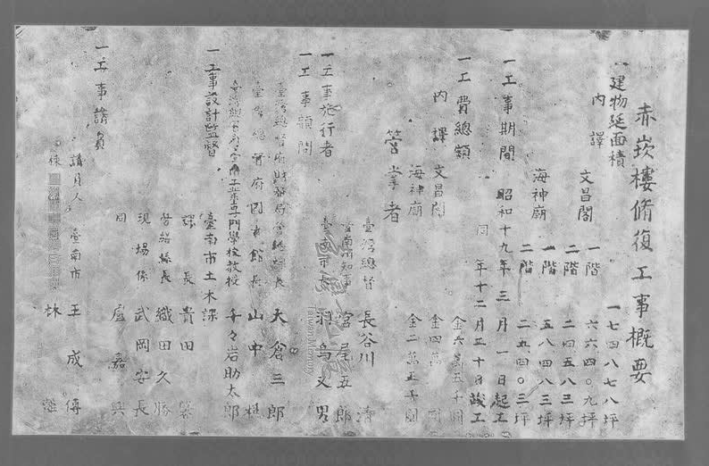

大家好~又是我們系學會空間股的【系館考古】系列文章，這次要來分享的是藏在20年前的系友訪談錄中，一段可以追溯回風雨飄渺的1940年代，系上最早的一批老師們和台南的名勝古蹟--赤崁樓--的趣談：
赤崁樓想必對於許多人而言是再熟悉不過。這座荷蘭人興建的堡壘在近四百年的時光間經歷數次的修改建，成為我們現在看到的模樣。從清代就有所謂「府城八景」之一的「赤崁夕照」，到今日無庸置疑的觀光熱點，赤崁樓可以說是數一數二能夠代表「台南」這座城市的象徵。
那它和建築系究竟有什麼關聯呢？這就要讓我們倒回1944年，在成大還是其前身「臺南工業專門學校」的時候開始說起了。
此時的日本陷入戰爭泥潭，台灣也處於軍需物資先於民生的戰時經濟時代，但在這樣一個時代下，時任台南市長的羽鳥又男先生推動了赤崁樓的修復工程，目的是為了修復在1941年的颱風損壞的結構，工程在1944年3月1日開工，12月20日竣工。這之中參與工程的，就包含了成大建築的第一任系主任：千千岩助太郎先生，和藝術界的泰斗，時任建築科助教授(相當於今日的建築系副教授)的顏水龍先生。
這場修復工程，拆除了大士殿和蓬壺書院的主體，修復海神殿與文昌閣，發掘普羅民遮城原先的正門。可以說如今「有兩座中式塔樓的荷蘭人古堡」這樣的形象就是在1944年的修復工程中被定型下來的。
這之中還有一段小插曲：在系上60周年訪談中，1947年返台執教的陳萬榮教授提到，在修復工程進行期間許多沒人要的「東西」(應該是文物或赤崁樓本身的構件)，就這麼樣的被教授們撿回系上，也就這麼樣的被放在系館，直到後來才贈與給歷史系。在如今強調文資保存觀念的時代，讀到這裡可說是讓人有點哭笑不得，但這或許也是那樣的時空背景下特有的醍醐味吧。
成大建築與赤崁樓的緣分可不只侷限在1944年，隨後在1965年開展的修復工程是由賀陳詞教授主持，1975年由梁瑞庭建築師主持，再到十來年後的1992年，紀錄上的第九次修復工程由孫全文教授主持，在這些修復工程中，都不乏有系友或是系上老師們的身影，這樣的緣分自是不言而喻了。
當前赤崁樓正在迎來其第十次的修復工程，想必洗淨三十年風霜的它也會繼續一如往常的陪伴這座城市吧。希望透過我們的分享，讓大家認識背後這段鮮為人知的淵源。
